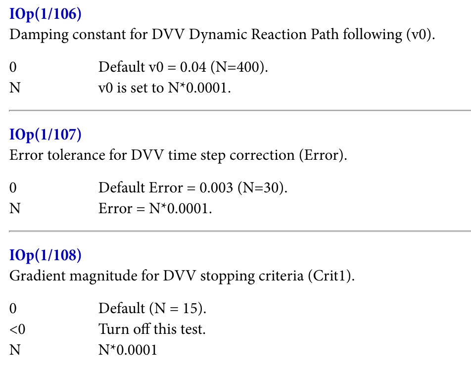

In scientific computation, where I principally reside these days, there’s a cultural and philosophical divide between physics-based and machine-learning-based approaches.
Physics-based approaches to scientific problems typically start with defining a simplified model or theory for the system. For instance, a scientist attempting to simulate protein dynamics might start by defining how the energy of a system depends on its coordinates by choosing (or creating) a forcefield. Once a model’s been selected, numerical simulations are run using the model and the output of these simulations is analyzed to produce a prediction.
Physical simulations like these are extensively used today in climate modeling, orbital mechanics, computational fluid dynamics, and computational chemistry. These approaches are typically robust and relatively easy to interpret, since the underlying theory is perfectly known. Still, it’s often possible to get very complex behavior from a small set of underlying rules. Application of Newtonian gravitation, for instance, gives rise to the chaotic “three-body problem.” This combination of simple physical rules and complex emergent behavior is what makes physical simulations so powerful: starting from a well-understood model, it’s possible to gain non-trivial insights about complex systems.
ML-based approaches to scientific computation turn all of this upside down. Many ML models directly map input to output without any intermediate subtasks, making it difficult to interpret what’s going on. While physics-based methods can often extrapolate from simple test cases to complex emergent behaviors, ML-based methods frequently struggle to predict behaviors outside of what they’ve seen before. Still, ML-based methods are often far more efficient than physical methods and, since they’re not constrained by a specific theoretical framework, can handle complex phenomena where the underlying functional form is not known.
When these two subcultures collide, things often get nasty. Proponents of physics-based modeling frequently allege that ML is fundamentally unscientific, since science is all about extrapolation, and that the unreliability and interpretability of machine learning makes it ill-suited for anything except hacking benchmarks.
On the other side of the aisle, machine-learning advocates claim that physics-based modeling is basically a way for scientists to feel smart and look at pretty pictures and will never be able to capture sufficient complexity to be useful. If you think I’m exaggerating, I’m not—here’s Pranam Chatterjee discussing why structure-based models like AlphaFold are “irrelevant” to disease (emphasis added):
…if we believe Anfinsen’s hypothesis: the sequence should encode everything else, including structure. Why do you need to look at the structure of the protein to understand it? I have concluded people just feel more satisfied looking at a protein, rather than trusting an implicit language model to capture its features. Hence the Nobel Prize.
For Pranam, the physical assumptions made by models like AlphaFold—that proteins have a three-dimensional structure that’s relevant to their biology—mean that these models are incapable of describing the complexity of reality. Contra Pranam, the point that I want to make in this piece is that there’s no reason why physics- and ML-based approaches should be so opposed to one another. In fact, I’m becoming convinced that the future looks like some hybrid of both approaches.
Why? One of the big limitations of physics-based methods, at least in drug discovery, is that the underlying models often aren’t expressive enough and can’t easily be made more expressive. Molecular forcefields have only a handful of terms, which means that they can’t easily represent coupled dihedral rotation, π–π stacking, and so on—let alone bond-breaking or bond-forming processes—but even optimizing empirical parameters for all these terms quickly becomes a laborious and hard-to-scale process. In contrast, ML-based methods can scale to millions of empirical parameters or beyond without becoming intractably complex or overfit.
On the other hand, the big advantage of physics-based approaches is their generalizability—even simple rulesets, like cellular automata, can lead to immensely complex emergent behavior. This sort of extrapolation is rarely seen in scientific ML projects. A recent blog post from Pat Walters makes the observation that most cheminformatic models don’t seem capable of extrapolating outside the dynamic range of their training data. This is surprising, since even the simplest of “physical” models (like a linear equation) are capable of this extrapolation.
If a hybrid approach is to work, it must be able to capture the strengths of both methods. One of the simplest ways to do this is an energy-based approach, where scientists don’t predict an output parameter directly but instead learn an energy function which can be used to indirectly predict an output. (Yann LeCun has advocated for this.) This adds some test-time complexity, since additional computation is needed after inference to generate the final output, but also constrains the model to obey certain physical laws. (If you want to predict forces, for instance, it’s often best to do so through differentiating the predictions of an energy model, since doing this guarantees that the outputs will be a valid gradient field.)
Physics-informed ML approaches can also resolve the interpolation/extrapolation problem. Since physical equations are well-suited to extrapolation, applying a physical model to the output of an ML layer can convert interpolated intermediate states to extrapolated final results. This sort of extrapolation is well-documented in neural network potentials—for instance, ANI-1 was trained only on molecules with 8 or fewer heavy atoms but proved capable of extrapolating to significantly larger molecules with good accuracy.
One fair criticism of these hybrid physics–ML approaches is that they often require much more test-time compute than pure-ML methods: optimizing a geometry with a neural network potential can require hundreds of intermediate gradient calculations, while in theory an ML method could predict the correct geometry with a single step. But in practice I think this is an advantage. Scaling test-time compute has been an incredible boon for the LLM space, and chain-of-thought reasoning models like OpenAI’s o3 and DeepSeek-r1 are now the gold standard. To the extent that physics-informed ML methods give us the ability to spend more compute to get better answers, I suspect this will mostly be good for the field.
At Rowan, we’ve recently published a few papers in this area—Starling, an energy-based model for predicting microstate distributions and macroscopic pKa, and Egret-1, a family of neural network potentials for bioorganic simulation—and I expect we’ll keep working on hybrid physics–ML approaches in the future. Others seem to be moving in this direction too. The recent Boltz-1x model (now on Rowan!) from Gabri Corso and co-workers incorporates inference-time steering for superior physical accuracy, and Achira’s written about the merits of “a third way” in simulation built around “harmonization of the theoretical and the pragmatic.”
There’s immense room for creativity at the intersection of physics and machine learning. Virtually any part of a complex physics-based workflow can potentially be replaced with a bespoke ML model, leading to almost limitless combinatorial possibilities for experimentation. Which combinations of models, algorithms, and architectures will prove to be dead-ends, and which will unlock order-of-magnitude improvements in performance and accuracy? It’s a fun time to be working in this field.
Appendix:
I asked my co-founder Eli what he thought of this piece. He pointed out that the amount of physics one should incorporate into an ML model depends on the amount of data and the dimensionality of the problem. I asked him to explain more, and here’s what he wrote:
In ML terminology, incorporating information about the modality on which you are predicting into the design of the model is called adding inductive bias. One example of this for atomistic simulation is enforcing Euclidean equivariance into a model. This explicitly ensures that any spatial transformation to a model’s input is reflected in its output. This does ensure that physical laws are followed but also increases the computational complexity of the model, limiting system size at inference time and inference speed.
Some neural network potentials like Equiformer enforce equivariance in every operation within the model to ensure physical laws are always followed, while others enforce it only for inputs and outputs, relaxing constraints for intermediate model operations. Models like Orb-v3 don’t enforce equivariance at all, but incorporate dataset augmentation and unsupervised pre-training techniques to improve sample efficiency and learn physical laws.
As dataset size and diversity increase, we may see less of a need for physical inductive bias in models. One place we’ve seen this is with convolutional neural networks (CNNs) and vision transformers (ViTs) in computer vision: CNNs have built-in translational invariance whereas ViTs do not include any spatial inductive bias but are theoretically more flexible. We see ViTs outperforming CNNs only as dataset size and model size pass a certain threshold. If we assume that a similar pattern will hold for atomistic simulation, we might expect that the dataset size at which this threshold occurs will be greater, as molecular simulation has more degrees of freedom than computer vision.
I think this is a good point—thanks Eli! More abstractly, we might expect that incorporating explicit physics will help more in the low-data regime, while pure ML approaches will be more effective as data and compute approach infinity.
Thanks to Ari Wagen, Jonathon Vandezande, and Eli Mann for reading drafts of this post.
With apologies to Andrew Marvell. If you haven’t read “To His Coy Mistress”, I fear this won’t make much sense.
* * *
Had we but funding enough and time,
This coyness, founder, were no crime.
We would sit down, and think which way
To build, and pass our slow run-rate’s day.
Thou by the Potomac’s side
Shouldst SBIRs find; I by the tide
Of El Segundo would complain. I may
Fund you ten years before the first customers pay,
And you should, if you please, refuse
Till the market supports dual-use.
Your annual revenue should grow
Vaster than Boeing’s and more slow;
An hundred years should go to build
Thy initial demo, until the warehouse filled;
Two hundred years for full refactoring,
But thirty thousand for manufacturing;
An age at least for every ambition,
And the last age to show your full vision.
For, founder, you deserve funding most,
Nor would I invest at a lower post.
But at my back I always hear
Palmer’s wingèd chariot hurrying near;
And yonder all before us lie
Investors dreaming only of exits and AI.
Thy product shall no more be found;
Nor, in thy bankrupt state, shall sound
My echoing retweets; then competition shall try
That long-preserved TAM and KPI,
And your quaint slide deck fall to pieces,
And into ashes all my investment theses;
Raytheon’s a fine and funded prime,
But none, I think, work there overtime.
Now therefore, while the youthful hue
Sits on thy skin like morning dew,
And while thy willing employees perspire
At every hour of night with resolute fire,
Now let us push to master while we may,
And now, like YC back in the day
All at once our runway devour
Than languish awaiting pricing power.
Let us roll all our strength and all
Our funding up into one ball,
And push our MVP with rough excess
Through the government procurement process:
Thus, though we cannot make the buyer
Stand still, yet we will make Anduril acqu-hire.
In 2007, John Van Drie wrote a perspective on what the next two decades of progress in computer-assisted drug design (CADD) might entail. Ash Jogalekar recently looked back at this list, and rated the progress towards each of Van Drie’s goals on a scale from one to ten. There’s a lot in Jogalekar’s piece that’s interesting and worth discussing, but I was particularly intrigued by the sixth item on the list (emphasis added):
Outlook 6: today’s sophisticated CADD tools only in the hands of experts will be on the desktops of medicinal chemists tomorrow. The technology will disperse
Twenty-five years ago, modelers worked with million-dollar room-sized computers with 3D display systems half the size of a refrigerator. Today, the computer which sits on my lap is far more powerful, both in computation speed and in 3D display capabilities. Twenty-five years ago, the software running on those computers was arcane, with incomprehensible user interfaces; much of the function of modelers in those days was to serve as a user-friendly interface to that software, and their assistance was often duly noted in manuscripts, if not as a co-author then as a footnote. Today, scientists of all backgrounds routinely festoon their publications with the output of molecular graphics software, running on their desktop/laptop machines with slick easy-to-use graphical user interfaces, e.g. Pymol.
This is a trend that will accelerate. Things that seem sophisticated and difficult-to-use, but are truly useful, will in 20 years be routinely available on desktop/laptop machines (and even laptops may be displaced by palmtops, multi-functional cellphones, etc.). Too many modelers are still in the business of being ‘docking slaves’ for their experimental collaborators (i.e. the experimentalist asks the modeler ‘please dock my new idea for a molecule’, and waits for the result to see if it confirms their design); this will ultimately disappear, as that type of routine task will be handled by more sophisticated user interfaces to current docking algorithms, e.g. the software from Molsoft is well on its way to fill such a role. Whereas the ‘information retrieval specialists’ that once populated corporate libraries have disappeared, replaced by desktop Google searches, this trend of modeling-to-the-desktop should not be a source of job insecurity for CADD scientists—this will free us up from the routine ‘docking slave’ tasks to focus our energies on higher-valued-added work. As a rule, things today that seem finicky and fiddly to use (e.g. de novo design software), or things that take large amount of computer resources (e.g. thermodynamic calculations, or a docking run on the full corporate database) are things that one can easily imagine will in the future sit on the desktops of chemists, used by them with minimal intervention by CADD scientists
Jogalekar gives the field a 6/10 on this goal, which I find optimistic. In his words:
From tools like Schrödinger’s Live Design to ChemAxon’s Design Hub, medicinal chemists now use more computational tools than they ever did. Of course, these tools are used in fundamental part because the science has gotten better, leading to better cultural adoption, but the rapidly dwindling cost of both software and hardware enabled the cloud has played a huge rule in making virtual screening and other CADD tools accessible to medicinal chemists.
It’s true that there are more computational tools available to non-computational scientists than there once were—but based on the conversations we’ve had with industry scientists (which also informed this piece), the role of computational chemists as “docking slaves” (Van Drie’s phrase, not mine) to their experimental colleagues still rings true. The number of experimental scientists able to also run non-trivial computational studies remains vanishingly low, despite the improvements in computing hardware and software that Van Drie and Jogalekar discussed.
Why hasn’t our field made more progress here? In my view, there are three principal reasons: immature scientific tools demand expert supervision, poorly designed technology deters casual usage, and cultural inertia slows adoption even further.
Most scientific tools optimize for performance and tunability, not robustness or ease of use. Quantum chemistry software forces users to independently select a density functional, a basis set, any empirical corrections, and (for the brave) allows them to tune dozens of additional parameters with obscure and poorly documented meanings. (“Oh, the default settings for transition states aren’t very good… you need to configure the initial Hessian guess, the integral tolerance, the optimizer step size, and a few other things… I’ll email you a couple scripts.”)

Settings like these are difficult to understand.
And these issues aren’t unique to quantum chemistry; virtually every area of scientific simulation or modeling has its own highly specialized set of tools, customs, and tricks, so switching fields even as a PhD-level computational chemist is challenging and treacherous. Some of this complexity is inherent to the subject matter—there are lots of unsolved computational problems out there for which no simple solution is yet known. For instance, handing changes in ionization state or tautomerization during free-energy-perturbation (FEP) simulations is (to my knowledge) just intrinsically difficult right now, and no robust solution exists that can be plainly put into code.
But better hardware and better methods can alleviate these issues. Searching through different conformers of a complex molecule used to be a challenging task that demanded chemical expertise and considerable software skill—now, metadynamics programs like CREST make it possible to run conformer searches simply from a set of starting coordinates. These new “mindless” methods are less efficient than the old methods that relied on chemical intuition, but in many cases the simulations are fast enough that we no longer care.
Similarly, the increasing speed of quantum chemistry makes it simpler to run high-accuracy simulations without extensive sanity checks. In my PhD research, I carefully benchmarked different tiny basis sets against high-level coupled cluster calculations to find a method that was fast enough to let me study the reaction dynamics of a catalytic transition state—now, methods like r2SCAN-3c give better accuracy in virtually every case and avoid the dangerous basis-set pathologies I used to worry about, making it possible to use them as a sane default for virtually every project.
Other fields have undergone similar transformations. Writing assembly code, when done right, produces substantially faster and more efficient programs than writing a compiled language like C, and writing C produces faster code than writing a high-level language like Python. But computers are fast enough now that writing assembly code is now uncommon. Python is much more forgiving, and makes it possible for all sorts of non-experts (like me) to write useful code that addresses their problems. Back in the days of the PDP-10, every FLOP was precious—but with today’s computers, it’s worth accepting some degree of inefficiency to make our tools quicker to learn, easier to use, and far more robust.
Computational chemistry needs to make the same transition. There will always be cutting-edge computational problems that demand specific expertise, and these problems will invariably remain the rightful domain of experts. But vast improvements in the speed and accuracy of computational chemistry promise to move more and more problems into a post-scarcity regime where maximum efficiency is no longer required and the field’s impact will no longer predominately be determined by performance.
Once a method becomes robust enough to be routinely used without requiring expert supervision, it’s safe to turn over to the non-experts. I’d argue that this is true of a decent proportion of computational workflows today, and advances in simulation and machine learning promise to make this true for a much greater proportion in the next decade.
2. Poorly Designed Technology Keeps People Out
Sadly, scientific considerations aren’t all that prevents molecular modeling from being more widely employed. The second underlying reason limiting the reach of computational tools is that most of the tools are, frankly, just not very good software. Scientific software frequently requires users to find and manage their own compute, write scripts to parse their output files and extract the data, and do plenty of needless work in post-processing—in many respects, being a computational chemist means stepping back in time to 1970s-era software.
These difficulties are considerable even for full-time computational chemists; for experimental scientists without coding experience, they’re insurmountable. No medicinal chemist should need to understand rsync, sed, or malloc to do their job! Some of the error messages from computational chemistry software are so obtuse that there are entire web pages devoted to decrypting them:
RFO could not converge Lambda in 999 iterations.
Linear search skipped for unknown reason.
Error termination via Lnk1e in /disc30/g98/l103.exe.
Job cpu time: 0 days 7 hours 9 minutes 17.0 seconds.
File lengths (MBytes): RWF= 21 Int= 0 D2E= 0 Chk= 6 Scr= 1
Why is so much scientific software so bad? Academic software development prioritizes complexity and proof-of-concepts because these are the features that lead to publications. More prosaic considerations like robustness, maintainability, and ease of use are secondary considerations at best, and it’s hard for academic research groups to attract or maintain the sort of engineering talent required for most impactful work in scientific software. In a piece for New Science, Elliot Hirshberg documents the consequences of this situation (emphasis added):
…most life sciences software development happens in academic labs. These labs are led by principal investigators who spend a considerable portion of their effort applying for competitive grants, and the rest of their time teaching and supervising their trainees who carry out the actual research and engineering. Because software development is structured and funded in the same way as basic science, citable peer-reviewed publications are the research outputs that are primarily recognized and rewarded. Operating within this framework, methods developers primarily work on building new standalone tools and writing papers about them, rather than maintaining tools or contributing to existing projects….
This organizational structure for developing methods and software has resulted in a tsunami of unusable tools…. Scientists need to learn how to download and install a large number of executable programs, battle with Python environments, and even compile C programs on their local machine if they want to do anything with their data at all.This makes scientists new to programming throw up their hands in confusion, and seasoned programmers tear their hair out with frustration. There is a reason why there is a long-running joke that half of the challenge of bioinformatics is installing software tools correctly, and the rest is just converting between different file formats.
Frustratingly, relatively few academic scientists seem to view this as a problem. In a thread discussing the lack of graphical user interfaces (GUIs) for scientific software on the Matter Modeling Stack Exchange, a user writes about how GUIs are not just a distraction but actively harmful for scientific software (emphasis added):
[GUI development takes time] that could be spent on other tasks, like developing more functionality in the core program, developing different programs for different tasks, or even doing other things like lab research that has clearer advantages for one’s career… But then, after the GUI has been designed and created, it’s a new source of maintenance burden. That means a program with a GUI will have to have time dedicated to fixing GUI issues for users, especially if an OS (or other system library) update breaks it. That’s time that could be spent on other things more productive to one’s career or research aspirations.
This is a textbook case of misaligned incentives. Researchers who create scientific software aren’t rewarded for making it easy for others to build on or use, only for making it increasingly powerful and complex—as a result, there are hundreds of complex and impossible-to-use scientific software packages floating around on Github. Almost all the scientific software projects which defy this trend are commercial or supported by commercial entities: at least from the users’ point of view, the incentives of a for-profit company seem superior to academic incentives here.
Better tools are the solution to the ever-increasing scientific burden of knowledge. Every day, experimental scientists use tools without fully understanding their internal workings—how many chemists today could build a mass spectrometer from scratch, or an HPLC? We accept that experimental tools can be productively used by non-experts who don’t understand their every detail—but when it comes to computational chemistry, we expect every practitioner to build their own toolkit practically from scratch.
This has to change. If we want scientific software to be more widely used, our field needs to find a way to make software that’s as elegant and user-friendly as the software that comes out of Silicon Valley. This can happen through any number of different avenues—improved academic incentives, increased commercial attention, and so on—but without this change, large-scale democratization of simulation will never be possible.
3. Cultural Inertia Slows Adoption
But even with robust methods and well-designed software products, cultural differences between computational and experimental scientists persist. Generations of PhD students have been taught that they’re either “computational” or “experimental,” with the attendant stereotypes and communication barriers that accompany all such dichotomies. In industry, scientists are hired and promoted within a given skillset; while scientists occasionally hop from experiment to computation, it’s rare to meet truly interdisciplinary scientists capable of contributing original research insights in both areas.
Many scientists, both computational and experimental, are happy with this state-of-the-art. Experimental scientists can avoid having to learn a set of confusing skills and delegate them to a colleague, while maintaining a comfortable skepticism of any computational predictions. Computational scientists, in contrast, get to serve as “wizards” who summon insights from the Platonic realm of the computer.
Some computational scientists even come to take pride in their ability to navigate a confusing web of scripts, tools, and interfaces—it becomes their craft, and a culture to pass along to the next generation. On Stack Exchange, one professor writes in response to a beginner asking about graphical user interfaces:
Trust me: it is better to learn the command line… I began using UNIX when I was 9 years old. It’s time for you to learn it too.
As Abhishaike Mahajan put in his poster about Rowan—“enough”! It doesn’t have to be this way.
Why care about democratizing simulation? We think that putting simulation into the hands of every scientist will enable innovation across the chemical sciences. As of 2025, it seems clear that computation, simulation, and ML will play a big role in the future of drug discovery. But as long as “computation” remains a siloed skillset distinct from the broader activity of drug discovery, the impact that these breakthroughs can have will remain limited by cultural and organizational factors.
If the importance of computer-assisted drug discovery continues to increase but the tools remain unusable by the masses, will computational chemists and biologists simply grow in importance more and more? Taken to the extreme, one can envision what Alice Maz terms “a priesthood of programmers,” a powerful caste dedicated to interceding between man and computer. Perhaps computational tools will remain inaccessible forever, and those who excel at drug discovery will be those who can best deploy a litany of arcane scripts. Perhaps the future of chemistry will be run by CS majors, and today’s drug hunters will merely be employed to synthesize compounds and run biological assays in service of the new elite.
But one can envision a future in which computational chemistry becomes a tool to aid drug designers, not supplant them. In 2012, Mark Murcko and Pat Walters (distinguished industry scientists both) wrote “Alpha Shock,” a speculative short story about drug discovery in the year 2037. I want to highlight a scene in which Sanjay (the protagonist) uses structure-based drug design to discover a new candidate and avoid paying his rival Dmitri royalties:
With the structures and custom function in hand, Sanjay was ready to initiate the docking study. But despite recent advances in the TIP32P** water model, Sanjay still didn’t completely trust the predicted protein-ligand binding energetics. Next, he transferred the experimental data into the Google Predictive Analytics engine and quickly designed a new empirical function to fit the experimental data. Now he launched the dynamic docking simulator, dropping the empirical function into the hopper... A progress bar appeared in front of him showing “10^30 molecules remaining, 2,704 h 15 min to completion.” Sanjay quickly stopped the process and constrained the search to only those molecules that fell within the applicability domain of his empirical function. This reduced the search to 10^12 molecules and allowed the analysis to complete in a few minutes.
After a bit of visual inspection to confirm the results of his docking study, Sanjay moved on to the next step. He knew that slow binding kinetics could provide a means of lowering the dose for his compound. To check this, he ran a few seconds of real-time MD on each of the top 50,000 hits from the docking study. A quick scan of the results turned up 620 structures that appeared to have the required residence time. Sanjay submitted all these structures to PPKPDS, the Primate Pharmacokinetic and Pharmacodynamic Simulator, a project developed through a collaboration of industry, academia, and the World Drug Approval Agency. Of the compounds submitted, 52 appeared to have the necessary PK profile, including the ability to be actively transported into the brain. All but a few were predicted to be readily synthesizable.
In “Alpha Shock,” a drug designer like Sanjay can leverage interactive, intuitive software to quickly test his hypotheses and move towards important conclusions. Sanjay’s tools serve to augment his own intuition and vastly increase his productivity, yet don’t require him to use bespoke scripts or memorize arcane incantations. To anyone with any experience with computer-assisted drug design, this will read like science fiction—but that is exactly the point. The world of “Alpha Shock” gives us a vision of where we need to go as a field, and highlights where we’re deficient today.
Better instrumentation and analytical tooling has revolutionized chemistry over the past sixty years, and better design & simulation tools can do the same over the next sixty years. But as we’ve seen with NMR and mass spectrometry, enabling technologies must become commonplace tools usable by lots of people, not arcane techniques reserved for a rarefied caste of experts. Only when computational chemistry undergoes the same transition can we fulfill the vision that Van Drie outlined years ago—one in which every bench scientist can employ the predictive tools once reserved for specialists, and in which computers can amplify the ingenuity of expert drug designers instead of attempting to supplant it.
Thanks to Ari Wagen for feedback on drafts of this piece.
This post is an attempt to capture some thoughts I have about ML models for predicting protein–ligand binding affinity, sequence- and structure-based approaches to protein modeling, and what the interplay between generative models and simulation may look like in the future. I have a lot of open questions about this space, and Abhishaike Mahajan’s recent Socratic dialogue on DNA foundation models made me curious to try the dialogue format here.
[The TORTOISE is sitting on a park bench with a thermos of tea and a stack of papers beside him. Enter ACHILLES, holding a stack of papers.]
ACHILLES: Hello, Mr. T. Mind if I join you on your bench?
TORTOISE: Of course, Achilles. What are you reading on this fine spring day?
ACHILLES: Right now, I’m reviewing some recent literature on the economics of seating in Mongolian yurts. And yourself?
TORTOISE: I’m looking through two fascinating papers criticizing modern protein–ligand co-folding methods.
The first is by Matthew Masters and co-workers and is entitled “Do Deep Learning Models for Co-Folding Learn the Physics of Protein–Ligand Interactions?” The authors show that AlphaFold 3 predicts the “correct” binding site for a variety of complexes even when the entire binding site is mutated to glycine, when bulky residues are added to fill the binding pocket, or when the polarity of key interactions is reversed. The authors argue that this demonstrates that AlphaFold is overfit to specific protein families, and that models need to be validated on “their compliance with physical and chemical principles.”
ACHILLES: Interesting, but not surprising.
TORTOISE:The second is by Peter Škrinjar and co-workers and is entitled “Have protein–ligand co-folding methods moved beyond memorization?” Here, the authors show that the success rate of co-folding methods is dictated by the similarity of structures to the training set. The models appear to perform well in cases where there is high train–test similarity, but on truly different structures their performance is dismal. The authors’ conclusion is even stronger than that of the first paper:
Incorporating physics-based terms to more accurately model protein-ligand interactions, potentially from simulations, conformational ensembles, or other sources, are likely needed to achieve more exciting results in this field.
Taken together, it’s clear that pure deep-learning-based approaches to solving these important scientific problems are doomed to fail.
ACHILLES: Well, let’s not rush ahead too quickly—perhaps we’ve been spending too much time together. It’s not surprising that these structure-based methods are prone to overfitting, but I expect that the next generation of sequence-only methods will overcome these hurdles.
TORTOISE: Hm, I admit this intuition leaves me in the dust. Can you enlighten me as to why your response to unphysical overfitting is to reject one of the only physical descriptors that we have—the 3D structures of the protein and the ligand? It seems to me that reducing the amount of available data is a peculiar way to improve the performance of one’s model.
ACHILLES: Of course, I’m happy to explain. Consider the problem from first principles. It’s not surprising that using 3D structures leads to overfitting—the dimensionality of these problems is vast, and our datasets are comparatively miniscule. So any given set of coordinates is virtually a guaranteed fingerprint for a particular protein or ligand, and we’re just training models that have one-hot encoded the structures they’ve seen. See for instance the recent work of Jain, Cleves, and Walters arguing that DiffDock is simply a fancy lookup table.
TORTOISE: Of course I agree, which is why it’s important that we find ways to generate more training data, not jettison what little data we have. The problem is not intractable; it seems that DiffDock-L is superior at this task. We need only wait for another order-of-magnitude increase in the amount of training data available to arrive at a robust deep-learning-based docking method.
ACHILLES: But, if you will, follow me a little further down this line of thinking. We know that protein–ligand structures are but a single snapshot of a dynamic ensemble of possibilities that interconvert smoothly in solution. This is why attempting to guess the binding affinity from a single pose is so futile, and why extensive sampling is needed for free-energy methods like FEP or TI.
Protein–ligand co-folding models must labor under the same constraints. Just because we’ve changed the scoring function from a forcefield to a neural network doesn’t mean that we can go back to considering a single averaged pose—let alone whatever pose happened to crystallize out of solution best. No, any method predicated on considering just a single pose is doomed to fail.
TORTOISE: So your proposal is to disregard all poses, and hope that “machine learning” can just call the right answer from the vasty deeps? I fear that you’ve been spending too much time on LinkedIn, my dear friend. Perhaps it’s time for you to return to a time before computing, like 5th-century Greece.
ACHILLES:Au contraire, tortuga. We know that it’s possible to go from sequence to structure with machine learning, unless you’ve already forgotten about this year’s Nobel Prize. And others have shown you can generate structural ensembles this way—look at AlphaFlow, or BioEmu. One could imagine running these models to generate candidate structures, then feeding these structures into a docking model, then feeding the docked structures into a scoring model, then combining the scoring predictions to generate a single predicted binding affinity.
ACHILLES: Precisely! Many of these intermediate models are difficult to train, since we don’t have good ground truth for protein structural ensembles or individual binding affinities per pose. In fact, almost the only piece of data we can reliably acquire data for is the very task we want to predict—macroscopic protein–ligand binding affinity. So the entire problem becomes far more tractable if we simply combine the individual models into one end-to-end model so that we can backpropagate through the entire stack. Then we can scale to larger datasets that don’t have associated structural information, like DNA-encoded libraries or Terray’s microarray technology.
Thus, by combining the models into one, we at once simplify our task and make it possible to scale to much larger datasets: e pluribus unum.
TORTOISE: A surprisingly plausible vision, but I’m still not convinced. (And you ought to be speaking Greek, not Latin.)
Partitioning this problem into multiple models, each of which performs a defined task, means that there are verifiable, low-dimensional intermediate states that can be inspected. Structural ensembles can be saved to PDB files, and individual binding affinities can be sanity-checked. When we dump everything together into one massive mega-model, who knows what the model will try to do? These low-dimensional checkpoints might even be critical for giving us the right inductive bias to prevent overfitting.
By way of comparison, consider LLMs—we use textual checkpointing all the time, from chain-of-thought to retrieval-augmented generation. “Just train a model to do the entire task in a single pass” sounds like the accelerationist, AI-informed position, but in reality interpretability and modularity have proven to be valuable levers across many fields of machine learning. Gleefully jettisoning them hardly seems prudent.
TORTOISE: Even disordered proteins must have a structure.
[Enter CRAB.]
CRAB: Hullo, dear friends! Are we talking about ESM2? I fear that these methods are passé; if you haven’t heard yet, ascribing individual importance to mere proteins is an inadequate assumption now obsoleted by deep learning.
ACHILLES: Whatever do you mean?
CRAB: Exactly what I said! Proteins don’t exist in a vacuum—they possess different post-translational modifications, they aggregate, they float in and out of biomolecular condensates, and many of the most important cellular functions don’t even involve proteins.
ACHILLES: You’re correct, of course, but it’s clear that proteins are one of the key structural and functional elements of the cell. How else do you explain the history of successful therapeutics that target specific proteins?
CRAB: Selection bias, my dear friend. Of course the brute-force medicinal chemistry strategies of yesteryear managed to identify a handful of indications amenable to single-protein therapies, just like a handful of traits can be ascribed to single genes. But most traits that matter are polygenic, and most diseases are doubtless treatable only at the systems-biology level. Any lesser approximations are simply inadequate.
TORTOISE: Oh dear, I fear this is becoming a bit too much for me.
CRAB: I’ve just accepted a position at a biotech company personally backed by the high suzerains of artificial intelligence. We take millions of brightfield images of cells that have been exposed to different molecules and use deep learning to connect the observed cell-state modifications to molecular structure. Think phenotypic screening, but grander and more glorious.
ACHILLES: Now I feel out of my depth. Perhaps Mr. T is right and this new world is not for me. The 5th century does have a certain rustic charm…
TORTOISE: Wait, I think I understand. Previously, we discussed how, by training a single model, we could circumvent the need for explicitly generating protein structural ensembles and scoring individual docked poses—a single meta-model could implicitly perform all these tasks in an end-to-end differentiable fashion and simply learn all the patterns, or perhaps perform some more advanced and less constrained form of logic. Achilles, do you consider this a fair summary of your position?
ACHILLES: Yes, that seems fair enough, although I hardly see how my proposal connects to this outlandish suggestion.
TORTOISE: If we wanted to extrapolate this to entire cells, we could perform a similar exercise. We could enumerate all the proteins in the cell with all their various post-translational modifications, and then use Achilles’s model to score a given molecule’s interaction with all of them. It would be a mighty amount of work—but, in theory, it’s possible.
CRAB: Ah, but you’d still be neglecting the effects of environment, aggregation, and so on. Think of an E3 ligase—do you think you could model that one protein at a time? And what do you say to DNA, RNA, lipids, and so on and so forth.
TORTOISE:Touché. Perhaps “protein” is the wrong word here—but there must be some number of defined, localized structural entities in the cell which interact with an exogenous small molecule, and these entities must be at least somewhat separable per the principle of locality.
ACHILLES: Yes, that’s right. After all, a molecule can only be at one place at a time.
TORTOISE: So if we could use Achilles’s model to predict the interaction of the small molecule with each of these entities, we would have a sort of interaction fingerprint in entity space. We could then, with sufficient data, train a new model to learn the interaction network between each entity and predict an overall cell-level response. Do you agree, Mr. Crab?
CRAB: I suppose so, although it sounds ungainly. How exactly do you plan to study the effects of a bunch of small molecules on a particular region of chromatin?
TORTOISE: Ah, but this is where we use Achilles’s trick once more. Instead of learning one model that accounts for per-entity interactions, and another model that combines the individual per-entity predictions into a cell-level prediction, we can just learn a single model and backpropagate through the entire stack. So now our single foundation model is implicitly learning not only protein conformational ensembles, protein–ligand docking, docking rescoring—we’re also learning post-translational modifications, systems biology, and so on.
ACHILLES: Ah, now I see. Our aquatic colleague here is taking my same logic a step further—instead of implicitly learning individual structures in the course of predicting a protein–ligand interaction, he’s implicitly learning individual protein–ligand interactions in the course of predicting a single cell response.
TORTOISE: Exactly. The question then becomes if he’ll have enough data to learn the entire stack, or if his model will suffer the same overgeneralization problems as today’s protein–ligand interaction models.
ACHILLES: Right. It’s clear that at some scale, questions of information theory must predominate—every problem has some minimum amount of data that it takes to solve. Otherwise we’d all be able to solve drug toxicity just from the 1500 structures in the ClinTox dataset.
TORTOISE: Precisely. We could imagine such a strategy working at the infinite-data limit, but in practice the mismatch between problem complexity and data availability seems vast, and slow to fill.
CRAB: This has been an interesting philosophical aside, but I’m afraid that trying to cram your preconceived notions about biological dogma into my model is ill-advised. Today’s scientists think of proteins because that’s all they know how to study—but true biological understanding can only come when we’re able to learn directly on cellular data without the foolish assumptions that have plagued biochemistry to date. Trying to interpret my cell-level models through the viewpoint of proteins is like trying to decompose a Cybertruck into a linear combination of horses.
But in any event, I must be off. An army of H100s awaits me, and I must deploy them!
[Exit CRAB.]
ACHILLES: That fellow has no scientific humility. Of course proteins are important! These Silicon-Valley types have no respect for the deep biological body of knowledge that came before them, and think they can just pour images and SMILES strings into a transformer and “solve biology.” But we’d better return to our previous discussion, or things may become too recursive.
TORTOISE: There seem to be more and more fellows like him around these days... but I suppose carcinization is a well-documented phenomenon. Where were we before this unexpected conversational loop?
ACHILLES: I was just proposing the idea that sequence-based models will implicitly learn structure where it’s helpful.
TORTOISE: Ah, yes. I am beginning to catch up with your lightning-fast intuition. Are you opposed to structure for ideological reasons, or because you think structural information will never be achievable on the scale required to solve this problem?
ACHILLES: Both—I’m opposed to structure because accurate structural ensembles, which are what’s needed here, will never be available. Even a billion cryoEM structures won’t be enough because single ground-state snapshots will never be enough.
ACHILLES: I freely admit that the Platonic ideal of MD simulations might furnish us with such data, to run the risk of sounding overly Greek. But you know as well as I do that MD simulations are unreliable and provide data that’s far worse than crystallography. What makes you think that dumping millions of AMBER trajectories into an ML model will do anything except increase demand for H100s?
TORTOISE: Improving MD simulations seems to be quite tractable. There have been a few papers over the past 12 months that use neural network potentials for protein simulation—consider GEMS, or AI2BMD, or even the most recent MACE-OFF preprint. Scaling NNPs works well; why not just scale NNPs and use them to run MD simulations?
ACHILLES: For one, NNPs are ridiculously slow compared to normal MD—capturing protein conformational motion through MD is expensive enough without making it three orders of magnitude slower. You may be content with slow and accurate simulations, but I myself feel the need to go quickly. MD simulations will never be fast enough for high-throughput virtual screening. And how are we supposed to verify the alleged accuracy of these simulations, anyway?
TORTOISE: NMR measurements, perhaps, or terahertz spectroscopy. The ingenuity of experimentalists cannot be underestimated.
ACHILLES: I grant that this might work for a single protein. But you’ve managed to select methods that are even less scalable than growing crystals in a tray. This can’t be a general solution—it’s the age of “big data” now, not painstaking spectral analysis measured in graduate-student years.
TORTOISE: Ah, but we don’t need massive amounts of data for our benchmarks. NNPs and MD are physically motivated, so they’re much less prone to overfitting than the approaches you discuss. Generalization occurs naturally, without needing to resort to the sorts of paranoid dataset splits seen with sequence-only methods.
ACHILLES: Might this not simply arise from how small the models are today? Once an NNP must handle long-range forces, complex many-body interactions, and so on, these models will be just as susceptible to overfitting as co-folding methods. I know you like to hide in your shell from time to time, but robustness isn’t everything—if all you want is to prevent overfitting, you might as well go back to using AutoDock Vina.
TORTOISE: Not all approaches are equally susceptible to overfitting, and encoding proper inductive biases is one of the most important tasks of an ML researcher. The sorts of properties predicted by NNPs—forces, energy, charges, and so on—are intrinsically local and thus can be learned much more easily from a limited dataset. In fact, this is one of the strongest arguments for using a geometric GNN in the first place; we naturally account for the symmetries of the problem, as opposed to needing to learn them through vast datasets. Consider the analogies to Noether’s theorem.
ACHILLES: I must confess, I rarely revisit the 1910s.
TORTOISE: More fundamentally, learning energy as an intermediate variable is an incredibly fundamental task, and it’s unlikely that we can avoid some version of this task—particularly since diffusion models and AlphaFold are almost certainly both implicitly learning forcefields anyway.
Trying to one-shot the hardest problems in computational biochemistry and biophysics with “deep learning” will forever be hamstrung by memorization and overfitting, since the approach is fundamentally agnostic to the nature of the problem. I’m simply proposing that trying to learn physically motivated, verifiable, and practical models that correspond to our physical understanding of the world may be a more tractable strategy, even if it seems slower to you.
ACHILLES: You know that I respect your stepwise approach to scientific discovery, but I fear you’re confusing your own intrinsic conservatism for enlightenment. Haven’t you heard of Sutton’s “bitter lesson”? Encoding expert intuition always makes the researcher feel accomplished, and is often effective in the small-data regime, but never pays off in the end.
TORTOISE: Mr. Crab could say the same thing to you.
ACHILLES: Admittedly. But the task of the ML researcher is not dissimilar to that of the philosopher: to carve reality at its joints, as my kinsman Plato said, and find the natural partitions between concepts that make our tasks tractable. Choosing the right problem to tackle with deep learning might seem like encoding expert intuition in an un-Suttonian way, but really it’s a higher-order consideration, and one which itself still remains impervious to learning.
TORTOISE: And what, pray tell, makes your protein–ligand model a natural partition, and my NNPs an unnatural partition?
ACHILLES: The elegance of the protein–ligand task is that it corresponds to a real information bottleneck—all the complexity of the system can easily be distilled into a single number, and in practice the measurement is performed that way. In contrast, your model is only indirectly testable and verifiable.
TORTOISE: Only as indirectly as any other physics-based method is testable. Scientists have been doing this for some time, you know.
ACHILLES: And even more fundamentally, even a “physics-based model” is anything but. Scratch the surface of an NNP-powered MD simulation and you’ll see an ocean of questionable assumptions: band-gap collapse, nuclear quantum effects, spin–orbit coupling, quantum vs. classical zero-point energy, and so on and so forth. Even a model trained on full-configuration-interaction calculations won’t perfectly reflect reality. At the end of the day, you’ll have wasted ten million dollars on AWS computers generating gnostic simulated data that you could have spent getting real, tangible results without approximations.
TORTOISE: I’m willing to concede that at some scale, what you’re proposing might work. But you have no idea how much data you need to learn protein–ligand interactions. Have you done a scaling study; do you even have a back-of-the-envelope estimate for what your proposed model will cost? Who knows what the true dimensionality of protein–ligand interaction space is, or if it’s remotely learnable with the general architectures you propose? Someone’s going to have to generate all this data, and it’s not cheap—even fleet-footed Achilles can’t outrun the fundamental limitations of laboratory science.
ACHILLES: Ah, let’s not let our conversation fold back on itself. Isn’t it possible that there are latent low-dimensional representations of protein–ligand interactions that can make my structure-only training process more efficient?
TORTOISE: Possible, yes, but not guaranteed. To make matters worse, even if you train a protein–ligand model you’ll have to turn around and train another foundation model for protein–protein interactions, and another model for nucleotides, and another model for lipids, and so on and so forth.
ACHILLES: Presuming the first model succeeds, I would think this a fine outcome.
TORTOISE: We know what the scaling laws for NNPs are, and we know that they can scale across different domains of science even at sub-GPT1 parameter count. These are real advantages, and we ought to not be hasty in discarding them. Plus, it’s not like today’s methods are inconceivably far from where we want to go. Forcefield-based free-energy methods aren’t perfect, but they’re good enough to be useful. Doesn’t that suggest that we don’t need to get e.g. nuclear quantum effects exactly right to build a useful model?
ACHILLES: Scaling simulation across the chemical sciences is intriguing. You should tell Adam Marblestone; maybe you can build an FRO out of this idea. But we must stay focused on running the race at hand first and worry about the whole decathlon later. Perhaps we’ll be able to perform evolutionary model merging and pull out conformational ensembles at a later date, but I fear that your bias towards legacy simulation methods blinds you to the task at hand.
And arguing that FEP+ is good enough to be useful proves too much. Simply creating a histogram of distance by atom types is good enough to be useful; even plastic model kits are useful. Being useful at the small-data limit and being a viable path towards the future are very different, and I fear you confuse them at your own peril.
TORTOISE: Think strategically, my tactical friend. Let’s say we’re trying to get to the ultimate protein–ligand prediction model, which I’ll call the Galapagos Giant Model. If I train an NNP that’s halfway there, I’ve built something that’s immediately practically useful and which I can deploy to real problems. If you build a one-shot prediction model that’s halfway there, you’re going to get an overfit and confused model that takes a SMILES string and a sequence and returns meaningless noise.
ACHILLES: (Of course, first I’d have to train a model that was halfway to being halfway complete…)
TORTOISE: The ability of startups and research programs to bootstrap their way through increasing complexity is a critical determiner of their success—this is why YC tells companies to ship and start talking to users as soon as possible. We know that NNPs are already useful. How can you accomplish a similar feat with your approach?
ACHILLES: Ah, but your line of argumentation seems to rely on its own conclusion. Why is my hypothetical half-baked model unusable but yours is useful? Isn’t it just as possible that my model is useful across many domains but struggles to generalize to bizarre systems, while your model manages to be deeply useful nowhere?
The greatest advantage of simulation—its exactitude—is also its greatest weakness. A simulation-based workflow is only as strong as its weakest link, or what one might call its Achilles heel.
TORTOISE: Science aside, I fear the self-reference here will soon become ponderous.
TORTOISE: I caution you not to rush to dismiss my approach prematurely. True ML FEP has never been tried, since the timescales remain inaccessible. Ligand-only corrections neglect the most important part of the system, which is the protein–ligand interactions—and we know that protein conformational motion is poorly described by forcefields, potentially biasing the entire simulation in deleterious ways. So no, I cannot feign surprise that these results are underwhelming.
ACHILLES: Still, you can’t deny that even the “overfit” ML methods of today like DiffDock are practically useful—it’s not like most drug programs deal with first-in-class structural families. How well do you think AlphaFold 3 works for kinase inhibitors? I would be surprised if the performance is not excellent.
TORTOISE: The dimensionality of ligand space is much higher than that of protein space.
ACHILLES: True. But it’s possible that generalization is easier in ligand space. I’m growing hungry—how about we continue this discussion over brunch?
TORTOISE: A capital idea. Shall we leave now?
ACHILLES: You are welcome to, but I may sit and read for a bit longer. As you know, I have a considerable speed advantage over you, and keeping up with the literature takes more and more of my time.
TORTOISE: Best of luck. We’ll see who gets there first!
[Exit TORTOISE.]
Thanks to Abhishaike Mahajan, Navvye Anand, Tony Kulesa, Pat Walters, and Ari Wagen for helpful conversations on these topics. I've also taken inspiration from talks I heard by Tom Sercu (Evolutionary Scale) and Pranam Chatterjee (Duke). Any errors are mine alone.
(This is a bit of a departure from my usual chemistry-focused writing.)
Fasting is an important part of many religious traditions, but modern Protestant Christians don’t really have a unified stance on fasting (and have opposed systematic fasts for a while). That’s not to say that Protestants don’t fast, though: over just the past few years, I’ve met people doing water-only fasts, juice fasts, dinner-only fasts, “social media” fasts, and many more.
These fasts don’t really line up with what I see in neighboring faith traditions:
Catholics traditionally avoid meat (but not fish or capybara) on Fridays and during Lent, and Orthodox Christians often follow similar restrictions.
During Ramadan, Muslims fast during the day but eat and drink at night.
And on Yom Kippur, Jews traditionally neither eat nor drink anything (even water).
I’ve been a bit puzzled by all this, so I decided to do a “literature review” and find documents from the early Church that discussed fasting. This post collects and summarizes the sources that I found. The sources are listed in approximate chronological order, with emphasis added throughout—if you don’t want to read everything, you can skip to the end and read my brief takeaways.
But before the baptism let the baptizer fast, and the baptized, and whatever others can; but you shall order the baptized to fast one or two days before….
But let not your fasts be with the hypocrites; for they fast on the second [Monday] and fifth day [Thursday] of the week; but fast on the fourth day [Wednesday] and the Preparation (Friday).
Thus, then, shall you observe the fasting which you intend to keep. First of all, be on your guard against every evil word, and every evil desire, and purify your heart from all the vanities of this world. If you guard against these things, your fasting will be perfect. And you will do also as follows. Having fulfilled what is written, in the day on which you fast you will taste nothing but bread and water; and having reckoned up the price of the dishes of that day which you intended to have eaten, you will give it to a widow, or an orphan, or to some person in want, and thus you will exhibit humility of mind, so that he who has received benefit from your humility may fill his own soul, and pray for you to the Lord. If you observe fasting, as I have commanded you, your sacrifice will be acceptable to God, and this fasting will be written down; and the service thus performed is noble, and sacred, and acceptable to the Lord. These things, therefore, shall you thus observe with your children, and all your house, and in observing them you will be blessed; and as many as hear these words and observe them shall be blessed; and whatsoever they ask of the Lord they shall receive.
Now, if there has been temerity in our retracing to primordial experiences the reasons for God's having laid, and our duty (for the sake of God) to lay, restrictions upon food, let us consult common conscience. Nature herself will plainly tell with what qualities she is ever wont to find us endowed when she sets us, before taking food and drink, with our saliva still in a virgin state, to the transaction of matters, by the sense especially whereby things divine are handled; whether (it be not) with a mind much more vigorous, with a heart much more alive, than when that whole habitation of our interior man, stuffed with meats, inundated with wines, fermenting for the purpose of excremental secretion, is already being turned into a premeditatory of privies, (a premeditatory) where, plainly, nothing is so proximately supersequent as the savouring of lasciviousness…
This principal species in the category of dietary restriction may already afford a prejudgment concerning the inferior operations of abstinence also, as being themselves too, in proportion to their measure, useful or necessary. For the exception of certain kinds from use of food is a partial fast. Let us therefore look into the question of the novelty or vanity of xerophagies, to see whether in them too we do not find an operation alike of most ancient as of most efficacious religion… I return likewise to Elijah. When the ravens had been wont to satisfy him with bread and flesh, why was it that afterwards, at Beersheba of Judea, that certain angel, after rousing him from sleep, offered him, beyond doubt, bread alone, and water? Had ravens been wanting, to feed him more liberally? Or had it been difficult to the angel to carry away from some pan of the banquet-room of the king some attendant with his amply-furnished waiter, and transfer him to Elijah, just as the breakfast of the reapers was carried into the den of lions and presented to Daniel in his hunger? But it behooved that an example should be set, teaching us that, at a time of pressure and persecution and whatsoever difficulty, we must live on xerophagies…. Anyhow, wherever abstinence from wine is either exacted by God or vowed by man, there let there be understood likewise a restriction of food fore-furnishing a formal type to drink. For the quality of the drink is correspondent to that of the eating. It is not probable that a man should sacrifice to God half his appetite; temperate in waters, and intemperate in meats….
The apostle reprobates likewise such as bid to abstain from meats; but he does so from the foresight of the Holy Spirit, precondemning already the heretics who would enjoin perpetual abstinence to the extent of destroying and despising the works of the Creator; such as I may find in the person of a Marcion, a Tatian, or a Jupiter, the Pythagorean heretic of today; not in the person of the Paraclete. For how limited is the extent of our interdiction of meats! Two weeks of xerophagies in the year (and not the whole of these — the Sabbaths, to wit, and the Lord's days, being excepted) we offer to God; abstaining from things which we do not reject, but defer.
For since, as I before said, there are various proclamations, listen, as in a figure, to the prophet blowing the trumpet; and further, having turned to the truth, be ready for the announcement of the trumpet, for he says, 'Blow the trumpet in Sion: sanctify a fast' This is a warning trumpet, and commands with great earnestness, that when we fast, we should hallow the fast. For not all those who call upon God, hallow God, since there are some who defile Him; yet not Him — that is impossible — but their own mind concerning Him; for He is holy, and has pleasure in the saints. And therefore the blessed Paul accuses those who dishonour God; 'Transgressors of the law dishonour God' So then, to make a separation from those who pollute the fast, he says here, 'sanctify a fast.' For many, crowding to the fast, pollute themselves in the thoughts of their hearts, sometimes by doing evil against their brethren, sometimes by daring to defraud…
We begin the holy fast on the fifth day of Pharmuthi (March 31), and adding to it according to the number of those six holy and great days, which are the symbol of the creation of this world, let us rest and cease (from fasting) on the tenth day of the same Pharmuthi (April 5), on the holy sabbath of the week. And when the first day of the holy week dawns and rises upon us, on the eleventh day of the same month (April 6), from which again we count all the seven weeks one by one, let us keep feast on the holy day of Pentecost — on that which was at one time to the Jews, typically, the feast of weeks, in which they granted forgiveness and settlement of debts; and indeed that day was one of deliverance in every respect.'
And concerning food let these be your ordinances, since in regard to meats also many stumble. For some deal indifferently with things offered to idols, while others discipline themselves, but condemn those that eat: and in different ways men's souls are defiled in the matter of meats, from ignorance of the useful reasons for eating and not eating. For we fast by abstaining from wine and flesh, not because we abhor them as abominations, but because we look for our reward; that having scorned things sensible, we may enjoy a spiritual and intellectual feast; and that having now sown in tears we may reap in joy in the world to come. Despise not therefore them that eat, and because of the weakness of their bodies partake of food.
You should therefore fast on the days of the passover, beginning from the second day of the week until the preparation, and the Sabbath, six days, making use of only bread, and salt, and herbs, and water for your drink; but do you abstain on these days from wine and flesh, for they are days of lamentation and not of feasting….
We enjoin you to fast every fourth day of the week, and every day of the preparation, and the surplusage of your fast bestow upon the needy; every Sabbath day excepting one, and every Lord's day, hold your solemn assemblies, and rejoice: for he will be guilty of sin who fasts on the Lord's day, being the day of the resurrection, or during the time of Pentecost, or, in general, who is sad on a festival day to the Lord. For on them we ought to rejoice, and not to mourn.
Yet even life in Paradise is an image of fasting, not only insofar as man, sharing the life of the Angels, attained to likeness with them through being contented with little, but also insofar as those things which human ingenuity subsequently invented had not yet been devised by those living in Paradise, be it the drinking of wine, the slaughter of animals, or whatever else befuddles the human mind. Since we did not fast, we fell from Paradise; let us, therefore, fast in order that we might return thither….
Do not, however, define the benefit that comes from fasting solely in terms of abstinence from foods. For true fasting consists in estrangement from vices. “Loose every burden of iniquity.” Forgive your neighbor the distress he causes you; forgive him his debts. “Fast not for quarrels and strifes.” You do not eat meat, but you devour your brother. You abstain from wine, but do not restrain yourself from insulting others. You wait until evening to eat, but waste your day in law courts. Woe to those who get drunk, but not from wine. Anger is inebriation of the soul, making it deranged, just as wine does. Grief is also a form of intoxication, one that submerges the intellect. Fear is another kind of drunkenness, when we have phobias regarding inappropriate objects; for Scripture says: “Rescue my soul from fear of the enemy.” And in general, every passion which causes mental derangement may justly be called drunkenness.
Fasting is the medicine of the soul, which teaches the body to abstain not only from vices but also from unnecessary desires. Just as the sick are often advised to abstain from certain foods, so too does the soul, wounded by sins, need the medicine of fasting, so that the allurements of pleasures may be removed and the purity of the heart may grow.
Thus, meat is to be avoided during fasts, for no sacrifice is pleasing if it nourishes the desires of the flesh. Likewise, wine must be tempered, lest the sweetness of drink weaken the fervor of devotion. For the holy Fathers abstained not only from food but also from drink, so that the entirety of body and soul might be consecrated to the Lord.
From this also arises the greater significance of fasting during Lent, so that not only is the external body afflicted, but the inner person is also renewed. For this reason, the number of forty days is sanctified, as the Lord fasted for forty days and nights in the desert and left this example for us, so that we may not falter in abstinence…
Fasting should not only be an abstinence from food but also a discipline of the soul. For one who abstains from food but does not abstain from sin harms himself more than he benefits. Thus fasting was pleasing to the holy men of old, as they neither consumed food nor committed sin. For it is written: 'Sanctify a fast' (Joel 2:15), meaning not only to observe a physical fast but also a spiritual one, free from sins, devoid of greed, unyielding to anger, and maintaining purity of mind and body.
As it is written, the fast is not broken before sunset, so that devotion is preserved throughout the entire day. For what benefit is fasting if the abstinence from food is not accompanied by discipline? The holy men of old fasted in such a way that the entire day was dedicated to prayer, and the fast itself became a pleasing sacrifice. This was also taught by the apostles, whose fasts combined not only abstinence from food but also persistent dedication to prayer.
For fasting alone is not enough; a virtuous life is also required. For what benefit is it to refrain from food if malice abounds? As the Lord said in the Gospel: "Do not be like the hypocrites, who appear gloomy" (Matt. 6:16). Fasting should be an internal sacrifice, so that not only is the body disciplined, but the soul is also purified.
The holy Fathers always observed this practice, ensuring that fasts were completed at evening time, reserving this period not only for abstinence but also for works of piety. After the day's labor, they devoted themselves to prayer and meditation on the divine law, for as evening approached, they offered a complete sacrifice of devotion to the Lord.
I speak not, indeed, of such a fast as most persons keep, but of real fasting; not merely an abstinence from meats; but from sins too. For the nature of a fast is such, that it does not suffice to deliver those who practise it, unless it be done according to a suitable law. For the wrestler, it is said, is not crowned unless he strive lawfully. To the end then, that when we have gone through the labour of fasting, we forfeit not the crown of fasting, we should understand how, and after what manner, it is necessary to conduct this business; since that Pharisee also fasted, but afterwards went down empty, and destitute of the fruit of fasting….
I have said these things, not that we may disparage fasting, but that we may honour fasting; for the honour of fasting consists not in abstinence from food, but in withdrawing from sinful practices; since he who limits his fasting only to an abstinence from meats, is one who especially disparages it. Do you fast? Give me proof of it by your works! Is it said by what kind of works? If you see a poor man, take pity on him! If you see in enemy, be reconciled to him! If you see a friend gaining honour, envy him not! If you see a handsome woman, pass her by! For let not the mouth only fast, but also the eye, and the ear, and the feet, and the hands, and all the members of our bodies.
And with respect to the two former precepts, we will discourse to you on another occasion; but we shall speak to you during the whole of the present week respecting oaths; thus beginning with the easier precept. For it is no labour at all to overcome the habit of swearing, if we would but apply a little endeavour, by reminding each other; by advising; by observing; and by requiring those who thus forget themselves, to render an account, and to pay the penalty. For what advantage shall we gain by abstinence from meats, if we do not also expel the evil habits of the soul? Lo, we have spent the whole of this day fasting; and in the evening we shall spread a table, not such as we did on yester-eve, but one of an altered and more solemn kind. Can any one of us then say that he has changed his life too this day; that he has altered his ill custom, as well as his food? Truly, I suppose not! Of what advantage then is our fasting? Wherefore I exhort, and I will not cease to exhort, that undertaking each precept separately, you should spend two or three days in the attainment of it; and just as there are some who rival one another in fasting, and show a marvellous emulation in it; (some indeed who spend two whole days without food; and others who, rejecting from their tables not only the use of wine, and of oil, but of every dish, and taking only bread and water, persevere in this practice during the whole of Lent); so, indeed, let us also contend mutually with one another in abolishing the frequency of oaths. For this is more useful than any fasting; this is more profitable than any austerity.
What need then is there to say more? Stand only near the man who fasts, and you will straightway partake of his good odour; for fasting is a spiritual perfume; and through the eyes, the tongue, and every part, it manifests the good disposition of the soul. I have said this, not for the purpose of condemning those who have dined, but that I may show the advantage of fasting. I do not, however, call mere abstinence from meats, fasting; but even before this, abstinence from sin; since he who, after he has taken a meal, has come hither with suitable sobriety, is not very far behind the man who fasts; even as he who continues fasting, if he does not give earnest and diligent heed to what is spoken, will derive no great benefit from his fast.
After you have paid the most careful attention to your thoughts, you must then put on the armour of fasting and sing with David: I chastened my soul with fasting, and I have eaten ashes like bread, and as for me when they troubled me my clothing was sackcloth. Eve was expelled from paradise because she had eaten of the forbidden fruit. Elijah on the other hand after forty days of fasting was carried in a fiery chariot into heaven. For forty days and forty nights Moses lived by the intimate converse which he had with God, thus proving in his own case the complete truth of the saying, man does not live by bread only but by every word that proceeds out of the mouth of the Lord. The Saviour of the world, who in His virtues and His mode of life has left us an example to follow, was, immediately after His baptism, taken up by the spirit that He might contend with the devil, and after crushing him and overthrowing him might deliver him to his disciples to trample under foot. For what says the apostle? God shall bruise Satan under your feet shortly. And yet after the Saviour had fasted forty days, it was through food that the old enemy laid a snare for him, saying, If you be the Son of God, command that these stones be made bread. Under the law, in the seventh month after the blowing of trumpets and on the tenth day of the month, a fast was proclaimed for the whole Jewish people, and that soul was cut off from among his people which on that day preferred self-indulgence to self-denial.…
I do not, however, lay on you as an obligation any extreme fasting or abnormal abstinence from food. Such practices soon break down weak constitutions and cause bodily sickness before they lay the foundations of a holy life. It is a maxim of the philosophers that virtues are means, and that all extremes are of the nature of vice; and it is in this sense that one of the seven wise men propounds the famous saw quoted in the comedy, In nothing too much. You must not go on fasting until your heart begins to throb and your breath to fail and you have to be supported or carried by others. No; while curbing the desires of the flesh, you must keep sufficient strength to read scripture, to sing psalms, and to observe vigils. For fasting is not a complete virtue in itself but only a foundation on which other virtues may be built. The same may be said of sanctification and of that chastity without which no man shall see the Lord. Each of these is a step on the upward way, yet none of them by itself will avail to win the virgin's crown. The gospel teaches us this in the parable of the wise and foolish virgins; the former of whom enter into the bridechamber of the bridegroom, while the latter are shut out from it because not having the oil of good works they allow their lamps to fail. This subject of fasting opens up a wide field in which I have often wandered myself, and many writers have devoted treatises to the subject. I must refer you to these if you wish to learn the advantages of self-restraint and on the other hand the evils of over-feeding.
The fasts before Easter will be found to be differently observed among different people. Those at Rome fast three successive weeks before Easter, excepting Saturdays and Sundays. Those in Illyrica and all over Greece and Alexandria observe a fast of six weeks, which they term "The forty days' fast." Others commencing their fast from the seventh week before Easter, and fasting three five days only, and that at intervals, yet call that time "The forty days' fast." It is indeed surprising to me that thus differing in the number of days, they should both give it one common appellation; but some assign one reason for it, and others another, according to their several fancies. One can see also a disagreement about the manner of abstinence from food, as well as about the number of days. Some wholly abstain from things that have life: others feed on fish only of all living creatures: many together with fish, eat fowl also, saying that according to Moses, these were likewise made out of the waters. Some abstain from eggs, and all kinds of fruits: others partake of dry bread only; still others eat not even this: while others having fasted till the ninth hour, afterwards take any sort of food without distinction. And among various nations there are other usages, for which innumerable reasons are assigned. Since however no one can produce a written command as an authority, it is evident that the apostles left each one to his own free will in the matter, to the end that each might perform what is good not by constraint or necessity. Such is the difference in the churches on the subject of fasts.
But [Bishop Cedd], desiring first to cleanse the place which he had received for the monastery from stain of former crimes, by prayer and fasting, and so to lay the foundations there, requested of the king that he would give him opportunity and leave to abide there for prayer all the time of Lent, which was at hand. All which days, except Sundays, he prolonged his fast till the evening, according to custom, and then took no other sustenance than a small piece of bread, one hen’s egg, and a little milk and water. This, he said, was the custom of those of whom he had learned the rule of regular discipline, first to consecrate to the Lord, by prayer and fasting, the places which they had newly received for building a monastery or a church.
To summarize my takeaways:
What Dates?
Early sources suggest fasting on Wednesday and Friday. Other sources introduce a Lenten fast, but the dates are a little unclear—sometimes just during Holy Week, sometimes just Good Friday and Holy Saturday, sometimes more.
Eating What?
There’s a mix: bread and water, bread and water and vegetables, or anything but meat and alcohol.
Eating When?
Often this isn’t mentioned at all, but sometimes it’s said that you shouldn’t eat anything until the evening.